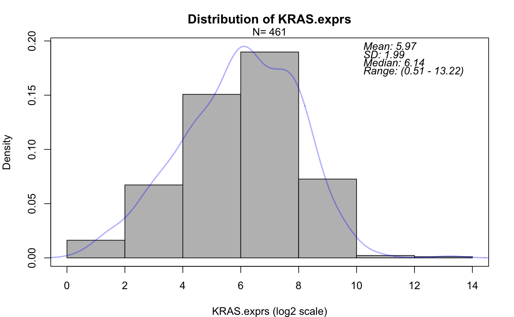
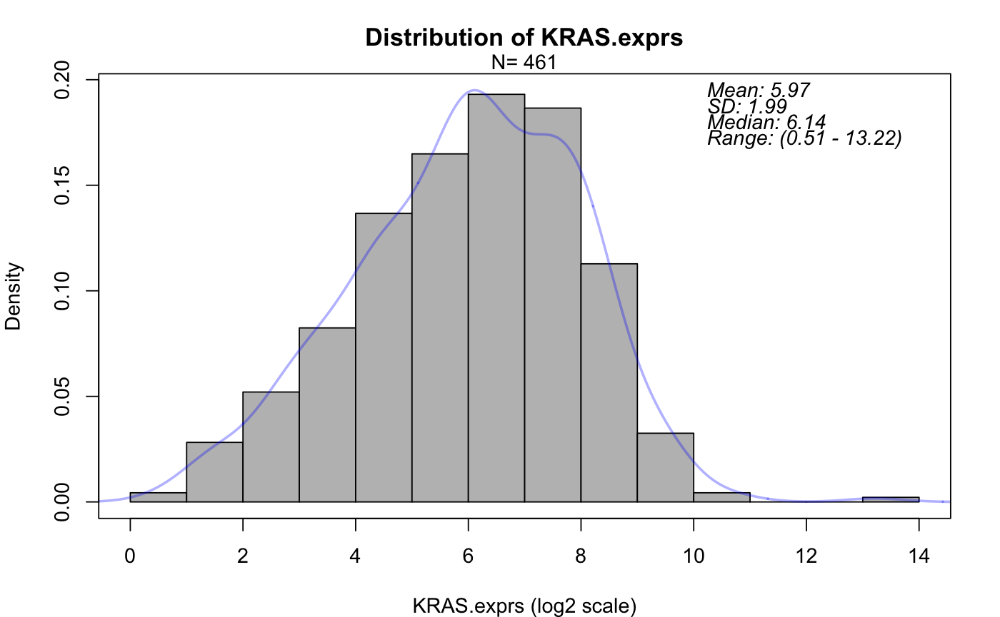
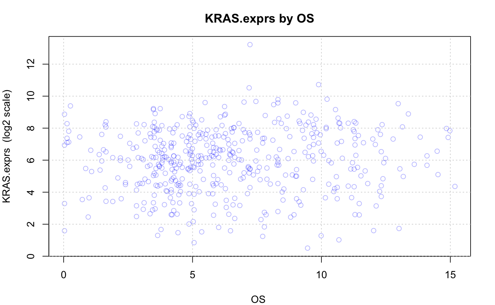
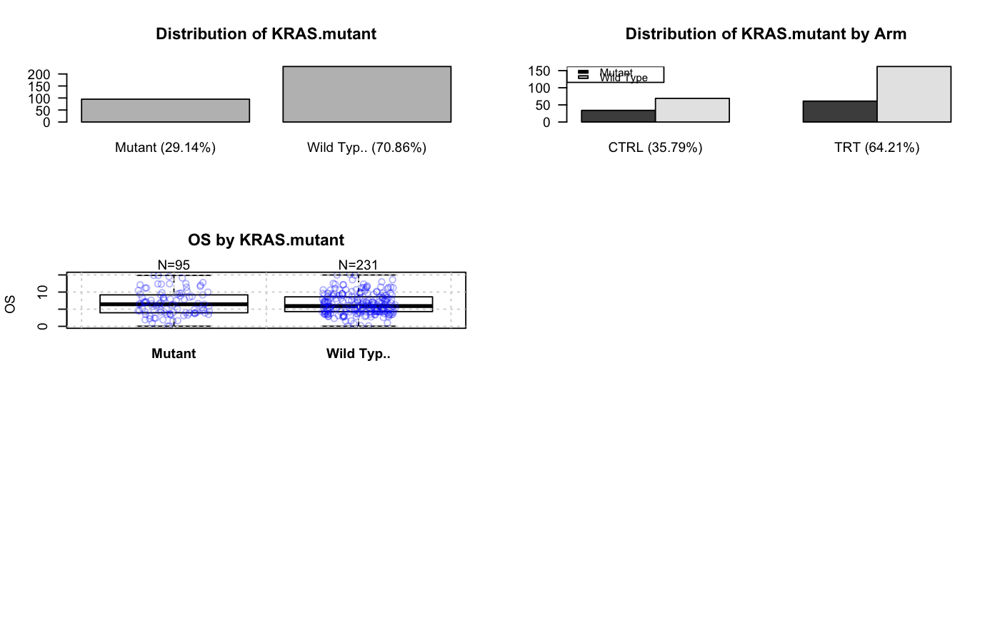

Plot Distribution
Plot biomarker or clinical variables properties.
PlotProperty(data, biomarker.var, biomarker.class = NULL, var = NULL, var.class = NULL, log2 = FALSE, col = rgb(0, 0, 1, alpha = 0.3), add.num = 0, text.font = 3, main = "Distribution of", xlab = "", add.lab = "", border = NULL, add.cor = FALSE, cor.method = "spearman", lowess.line = FALSE, lowess.line.col = "deepskyblue", show.biomarker.uni = TRUE, show.clinical.uni = FALSE, show.association = TRUE, f = 0.3, las = 1, pdf.name = NULL, pdf.param = list(width = 6, height = 4.5), par.param = list(mar = c(4, 4, 3, 2)), ...)
Arguments
| data | input data frame. Rows are patients and columns are variables (e.g. demographics variables, time to event variables, biomarker variables, treatment indicator, etc.). One patient per row. |
|---|---|
| biomarker.var | name of the biomarker variable. Should be in colnames of |
| biomarker.class | can be either "numeric" or "categorical". If NULL (default), the class will be defined automatically. |
| var | name of a clinical variable. It can be a vector of variables. Should be in colnames of |
| var.class | can be either "numeric" or "categorical". It can be a vector of classes. If NULL (default) and var is not NULL, then |
| log2 | if TRUE, computes binary (i.e. base 2) logarithm. It can be a vector if there are several numeric variables. The |
| col | the color of the line segments or dots. Default is "blue" with 30 percent transparency, i.e. |
| add.num | the constant to add to all values. Helps to avoid applying log transformation on 0 or negative values. Will be ignored if covariate is categorical. Default is 0. |
| text.font | legend text font size. Default is 3. |
| main | the main title. Default is |
| xlab | x axis label. Default is "". |
| add.lab | an additional text to y axis label. Default is "". |
| border | a vector of colors for the outlines of the boxplots. Default is NULL. |
| add.cor | add the correlation coefficient to the boxplot. Default is FALSE. |
| cor.method | which correlation coefficient to compute. One of "pearson", "kendall", or "spearman" (default) can be abbreviated. |
| lowess.line | performs the computations for the |
| lowess.line.col | the smoother color. Default is "deepskyblue". |
| show.biomarker.uni, show.clinical.uni, show.association | indicate whether to show biomarker uni-variate plot, clinical variable uni-variate plot, biomarker-clinical variable association plot, respectively. Default is TRUE for all but show.clinical.uni. |
| f | the smoother span. This gives the proportion of points in the plot which influence the smooth at each value. Larger values give more smoothness. Default is 0.3. |
| las | create a barplot with labels parallel (horizontal) to bars if |
| pdf.name | name of output pdf file. If it's NULL (default), the plots will be displayed but not saved as pdf. |
| pdf.param | a list of parameters that define pdf graphics device. See |
| par.param | a list of parameters that define graphcial parameters. See |
| ... | other arguments passed on to the individual functions, like hist(), boxplot(), etc. |
Value
If only a biomarker variable is given, it will crete a density plot for a numeric variable or bar plot for a categorical variable. If only a vactor of clinical variables is provided, it will create a density plot for each numeric variable and a bar plot for each categorical variable. If both a biomarker variable and a vector of clinical variables are given, it will create: a scatter plot for a numeric pair of variables; a bar plot for each categorical variable; a bar plot for a pair of categorical variables; a density plot for a numeric clinical variable; a boxplot for a pair of numeric and categorical variables.
Examples
data(input) PlotProperty(data=input, biomarker.var="KRAS.exprs", biomarker.class="numeric", log2=TRUE)PlotProperty(data=input, biomarker.var="KRAS.exprs", biomarker.class="numeric", log2=TRUE, breaks=5)PlotProperty(data=input, biomarker.var="KRAS.exprs", biomarker.class="numeric", var="OS", var.class="numeric", log2=c(TRUE, FALSE))PlotProperty(data=input, biomarker.var="KRAS.mutant", biomarker.class="categorical", var=c("Arm","OS"), var.class=c("categorical", "numeric"), par.param=list(mfrow=c(3, 2)))PlotProperty(data=input, biomarker.var="KRAS.mutant", biomarker.class="categorical", var=c("Country", "Age"), var.class=c("categorical", "numeric"), col=rgb(0, 0, 1, 0.2), par.param=list(mfrow=c(3,2)))